EDUC_806- Quantitative Research Methods
Chapter 4- Regression
Simple Linear Regression (SLR)
During Tutorial 2 & 3 (“Model Terminology”), I explained that Linear model and Linear regression are just synonyms and we often use either terms when quantifying the effect of a “continuous” independent variable on a”continuous” dependent (response) variable. The difference between this and ANOVA is that ANOVA is usually used when quantifying the effect of a “discrete (or categorical)” independent variable on a”continuous” dependent variable. So, it is important to note that- ANOVA is also a linear regression! In fact, if you run “anova” function on linear model object, you’ll most likely get the same p-value.
Regression generally refers to the fact that we are quantifying the relationship between a response variable and (one or more) predictor variables. In the case of SLR, both the response and the predictor are numeric variables and we are using a single predictor (independent) variable. Later we will use multiple predictor variables (multiple regression). Also, this models tells us that our model for Y is a linear combination of the predictors X. (In this case just one predictor)! For now, this always results in a model that is a line, but this is not always the case (and we may see this later on in the semester).
Like ANOVA, in SLR, we often talk about the assumptions that this model makes. This include-
- Linearity- the relationship between Y and x is linear, of the form \(\beta_0 + \beta_1x\).
- Independent. The errors \(\epsilon\) are independent.
- Normality. The errors, \(\epsilon\) are normally distributed. I.e. the “error” around the line follows a normal distribution.
- Equality of Variance. At each value of x, the variance of Y is the same.
For this lab, we will be using a year dataset on Corvettes sales in Virginia Beach, Virginia. Using this data, ten Corvettes (between 1 and 6yrs old) were randomly selected and the below data shows the sales price (in hundreds of dollars) denoted by y and the age (in years) denoted by x.

Tasks
- Graph the data in a scatterplot to determine if there is a possible linear relationship.
- Compute and interpret the linear correlation coefficient, r.
- Determine the regression equation for the data.
- Graph the regression equation and the data points.
- Identify outliers and potential influential observations.
- Compute and interpret the coefficient of determination, r2.
- Obtain the residuals and create a residual plot. Decide whether it is reasonable to consider that the assumptions for regression analysis are met by the variables in questions.
- At the 5% significance level, do the data provide sufficient evidence to conclude that the slope of the population regression line is not 0 and, hence, that age is useful as a predictor of sales price for Corvettes?
- Obtain and interpret a 95% confidence interval for the slope, β, of the population regression line that relates age to sales price for Corvettes.
- Obtain a point estimate for the mean sales price of all 4-year-old Corvettes.
- Determine a 95% confidence interval for the mean sales price of all 4-year-old Corvettes.
- Find the predicted sales price of Jack Smith’s 4-year-old Corvette.
- Determine a 95% prediction interval for the sales price of Jack Smith’s 4-year-old Corvette.
This is the link to the main google drive folder for all the data to complete Lab_5!
To begin, open your SPSS and load in the Corvettes_data. I’ve reprocessed it and you can download it here. if for anything that doesn’t work, you can manually enter the two variables in the SPSS.
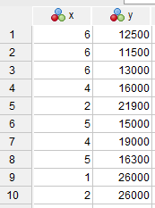
1. To graph the data in a scatterplot and determine if there is a possible linear relationship.
Select Graphs > Scatter/Dot > select Simple, then click the Define button. The Y-axis should be the Price and the X Axis variable = Age. Click on “Titles” and you can enter a descriptive title for your graph, and click “Continue.” Click “OK”.
Your graph should look similar to the figure below

Interpretation- The points seem to follow a linear pattern, although with a negative slope.
To compute the linear correlation coefficient,
Click on “Analyze” > “Correlate” > “Bivariate”. Select “Age” and “Price” as the variables and select “Pearson” as the correlation coefficient. Finally, you can run the analysis.
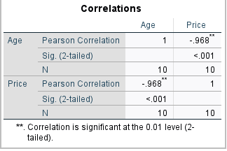
The Pearson Correlation is a statistical method that calculates the strength and direction of linear relationships between continuous variables. It produces a sample correlation coefficient, r, which can be used to evaluate whether there is a linear relationship among the same variables in the population. This population correlation coefficient is represented by ρ (“rho”) and is a parametric measure.
Pearson correlation indicates:
Whether there is a statistically significant linear relationship between two continuous variables
It also shows the strength of this linear relationship (i.e., how close the relationship is to being a perfectly straight line)
Finally, it reveals the direction of this linear relationship (increasing or decreasing)
It is however important to note that Pearson Correlation cannot address non-linear relationships or relationships among categorical variables. To address relationships that involve categorical variables and/or non-linear relationships, you need to consider the equivalent non-parametric test (e.g., Spearman’s rank correlation).
Also, while Pearson Correlation reveals associations among (continuous) variables, you should remember that “Correlation does not imply causation,” no matter how large the correlation coefficient is.
Interpretation- The correlation coefficient is -0.968. This r-value indicates a robust negative linear correlation, given its proximity to -1 and negative sign. This strong negative linear correlation suggests that data points should closely cluster around a downward-sloping regression line, (which aligns with the graph above). Consequently, the presence of a strong negative linear relationship between Age and Price supports the continuation of linear regression analysis.
Regression equation for the data.
Because our goal here is to predict the price of 4-year-old Corvettes, let’s modify the data variable before we proceed. Under the “Age” variable, enter the number “4” after the last row. Also, at the last row of the “Price” variable, enter a dot “.” This way, we’re telling SPSS that we want a prediction for this value and not to include the value in any other computations.
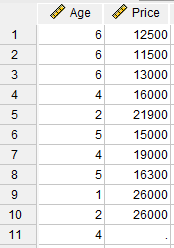
Select Analyze > Regression > Linear. Select “Price” as the dependent variable and “Age” as the independent variable. Click “Statistics,” select “Estimates” and “Confidence Intervals” for the regression coefficients, select “Model fit” to obtain r2, and click “Continue.”
Click “Plots,” select “Normal Probability Plot” of the residuals and click “Continue.” Click “Save,” select “Unstandardized” predicted values, select “Unstandardized” and “Studentized” residuals, select “Mean” (to obtain a confidence interval output in the Data Window) and “Individual” (to obtain a prediction interval output in the Data Window) at the 95% level, and click “Continue.” Finally, click “OK” to run the analysis.
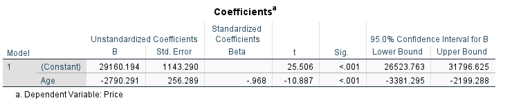
From above, the regression equation is: Price = 29160.194 – (2790.291)(Age). So what if a newly sold Corvettes was 10years old? What would be the price? Y = 29160.194 – (2790.291)(10) which equals ~ $1257.284.
Graph the regression equation and the data points
Another way to visualize our regression line is through a scatterplot. Click on Graphs, then Scatter/Dot. In the Scatter/Dot dialog box that appears, be sure “Simple Scatter” is selected and then click Define. Move “Price” to the “Y Axis” box and move “Age” to the “X Axis” box and then click OK. A simple scatterplot should appear in your Output Viewer window. Double click the graph to show the “Chart Editor” window. Now, click Elements and then click Fit Line at Total. Now your scatterplot displays the linear regression line computed above while also providing you with the regression equation and the R squared value. This is a good way to double-check that we’ve written our equation correctly.
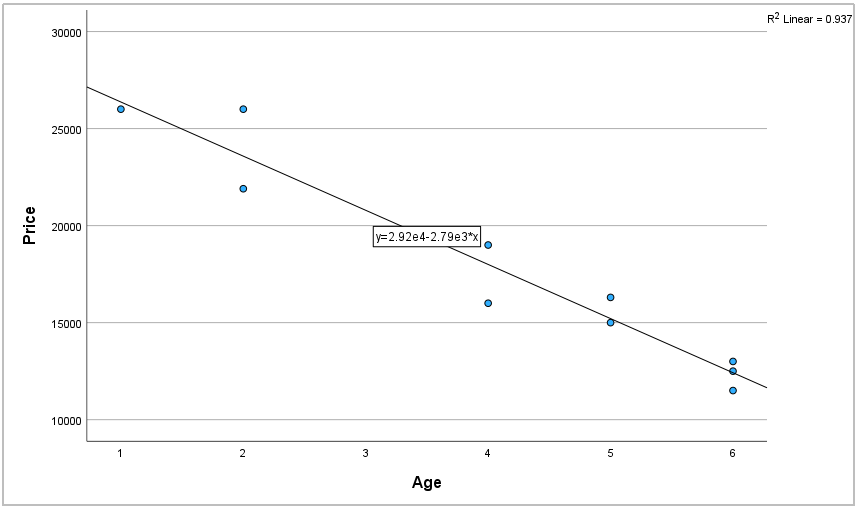
Identify the Outliers and potential influential observations
From the plot, there seem to be no points that lie far from the cluster of data points or far from the regression line; thus, no possible outliers.
Compute and interpret the coefficient of determination, r2.
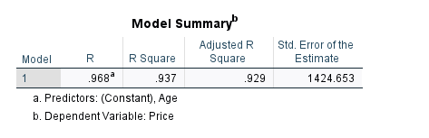
The r2 = 0.937; therefore, about 93.7% of the variation in the price data is explained by age. I.e., as the car gets older, the value/price drops! The regression equation appears to be very useful for making predictions since the value of r2 is close to 1.
Note- we also have adjusted R-square. R-square technically measures the variation of a regression model (variation in Y given x). R-squared either increases or remains the same when new predictors are added to the model. Adjusted R-squared measures the variation for a multiple regression model, and helps you determine goodness of fit. For the purpose of this SLR (one predictor, we are not adding more), so we can decide to intepret any of them. But if you have multiple predictors, you may want to look into Adj. R2)!
Residuals
The residuals, predicted values and confidence intervals can be found in the data window.
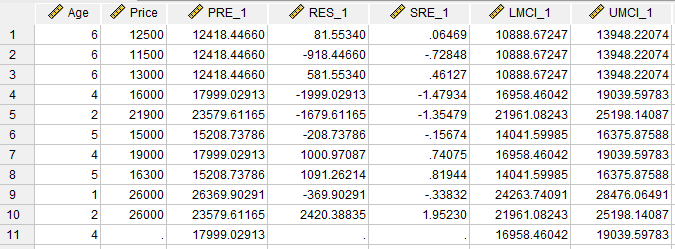
To create a residual plot, select Graphs> Scatter/Dot>Simple. Select the residuals (RES_1) as the Y Axis variable and Age as the X Axis variable. Click “Titles” to enter “Residual Plot” as the title for your graph, and click “Continue”. Click “OK”.
Double-click the resulting graph in the output window, select “Options” > “Y Axis Reference Line”, select the “Reference Line” tab in the properties window, add position of line “0”, and click “Apply”. Click the close box to exit the chart editor.
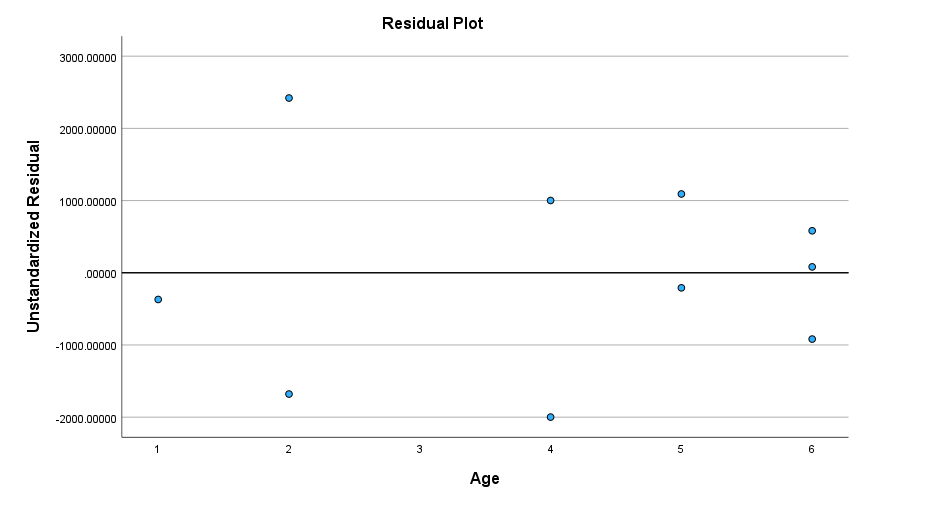
Do the same scatter plot to create a studentized residual plot. Select the SRES as the Y axis in this case (Age remains the X axis). Set the title and enter “Studentized Residual Plot”.
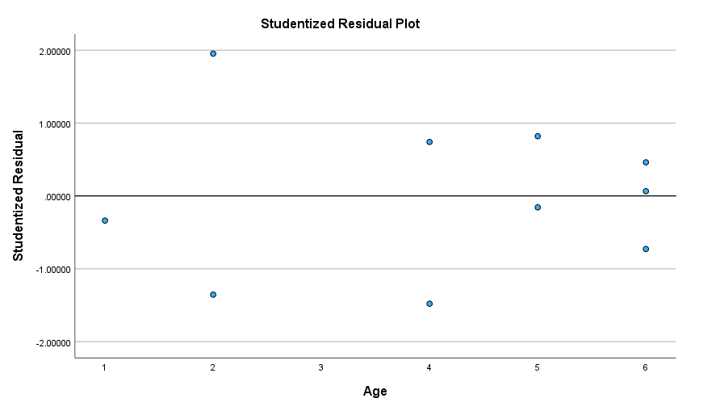
Also, to assess the normality of the residuals, consult the P-P Plot from the regression output.
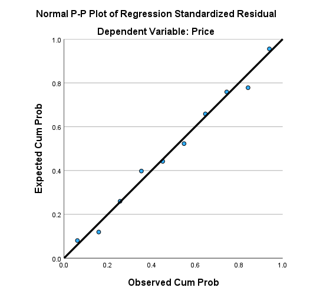
Interpretation- The residual plot shows a random scatter of the points (independence) with a constant spread (variance). Also, the studentized residual plot shows a random scatter of the points (independence) with a constant variance and with no values beyond the ±2 standard deviation reference lines (no outliers). The normal probability plot of the residuals shows the points close to a diagonal line; therefore, the residuals appear to be approximately normally distributed. Thus, we have evidence to conclude that the assumptions for regression analysis appear to be met.
Question - Using 5% significance level, do the data provide sufficient evidence to conclude that the
slope of the population regression line is not 0 and, hence, that age is useful as a predictor
of sales price for Corvettes?
Here, we need to state the hypothesis. The hypothesis from the question above is that-
\(H_0\): \(\beta = 0\) (Age is not a useful predictor of price.)
\(H_a\): \(\beta \neq 0\) (Age is a useful predictor of price.)
Now that we’ve done that, remember our alpha = 0.05 and our critical value or rejection region is that we should reject the null hypothesis if alpha is less than 0.05. Finally, to answer the question, you can choose your test Statistic (choose either the T-test method or the F-test method- not both!). Check the regression output and see the “coefficient”. From the result of the regression, you can see that T = –10.887, and p-value = <0.001
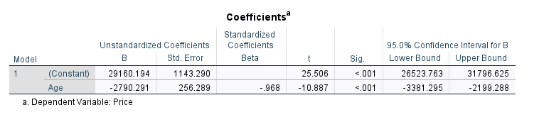
Interpretation- Since the P-value < 0.05, we have evidence to reject the null hypothesis. In other words, we have enough evidence to conclude that the slope of the population regression line is not zero. In other words, age is a useful predictor of price for Corvettes.
Obtain and interpret a 95% confidence interval for the slope, β , of the population regression line that relates age to sales price for Corvettes.
Look at the regression coefficient above, We are 95% confident that the slope of the true regression line is somewhere between –3381.295 and –2199.288. In other words, we are 95% confident that for every year older Corvettes get, their average price decreases somewhere between $3,381.295 and $2,199.288.
Obtain a point estimate for the mean sales price of all 4-year-old Corvettes.
Look at the data window (last row), the point estimate (PRE_1) is 17999.02913 dollars ($17,999.02913).
Determine a 95% confidence interval for the mean sales price of all 4-year-old Corvettes.
Still on the last row of the data table, we are 95% confident that the mean sales price of all four-year-old Corvettes is somewhere between $16,958.46042 (LMCI_1) and $19,039.59783 (UMCI_1).
Find the predicted sales price of Jack Smith’s selected 4-year-old Corvette.
The predicted sales price is 17999.02913 dollars ($17,999.02913).
Determine a 95% prediction interval for the sales price of Jack Smith’s 4-year-old
Corvette.
We are 95% certain that the individual sales price of Jack Smithʼs Corvette will be
somewhere between $14,552.91726 (LICI_1) and $21,445.14099 (UICI_1).
Multiple Linear Regression
So far, we have learned how to calculate a linear regression equation and make predictions. However, what if there are other potential independent variables to consider? In fact, It is uncommon for a dataset or research study to have only one predictor. Similarly, it is rare for a response variable to depend solely on a single variable. In this chapter, we will expand our simple linear regression (SLR) model to include multiple predictors. Multiple regression allows us to incorporate multiple independent variables and assign weights to each of them, resulting in more accurate predictions. The process of conducting a multiple regression in SPSS is similar to that of linear regression, with the difference being the inclusion of additional independent variables.
For this lab, we shall be using the “autompg” dataset containing car information. This dataset provides data on fuel economy from 1999 and 2008 for about 38 popular models of cars. It contains a response variable known as “mpg,” which records the city fuel efficiency of cars, alongside several predictor variables detailing the vehicle attributes. You can download the data from our google drive folder. See the link here. For anyone using R, you can find the dataset loaded with the ggplot2 package.
Brief description of the variables in the data
| Variable | Type | Description |
|---|---|---|
| mpg | numeric | city fuel efficiency |
| cyl | integer | number of cylinders |
| displ | numeric | engine displacement in liters |
| hp | numeric | horse power |
| wt | numeric | Weight |
| acc | numeric | acceleration |
| year | integer | year of manufacturing |
At this point, our focus will be on utilizing two variables, “wt” and “year,” as predictor variables. In other words, we aim to create a model that predicts a car’s fuel efficiency (mpg) based on its weight (wt) and the model year (year). To achieve this, we will formulate the following linear model:
\[ Y_i = \beta_i + \beta_1X_1 + \beta_2X_2 + \epsilon_i, \hspace4ex i = 1, 2, …,n\]
where \(\epsilon_i \sim N(0,\alpha^2)\) , \(x_{i1}\) = the weight (wt) of the \(i\) car, and \(x_{i2}\) as the model year (year) of the \(i\) car.
Task- before we do for multiple predictors, let’s quickly revist SLR and use one predictor. For this part, perform a simple linear regression of mpg against wt. What’s the R-squared? is weight a good predictor of mpg? (refer back to the tutorial on SLR- we just covered all of that)!
Your model summary should be like below.
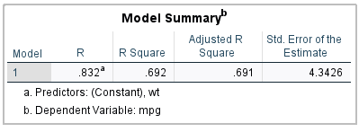
Okay, now that we have done that- we can proceed to multiple linear regression. Recall, we want to build a model with mpg as dependent variable, while wt and year as independent variables.
To do this SPSS,
Click on Analyze, then Regression, then Linear from the submenu to open the Linear Regression dialog.
In the Linear Regression dialog:
Move the dependent variable “mpg” to the “Dependent” box.
Move the independent variables “wt” and “year” to the “Independent(s)” box.
Click the “Statistics” button to access the statistics options and check “estimates” (under regression coefficient) and model fit to request the coefficients of the linear model and model fit.
Click “Continue” to return to the Linear Regression dialog.
Finally, click “OK” to run the linear regression analysis.
Questions
1) Looking at the Output Viewer window, you should sea tables that are similar to the ones in our previous example (our model summary is new). Take a look at the “model summary” to determine the new R squared and Standard Error of the Estimate. Compare that with the previous regression output- has the inclusion of additional variables (year) resulted in an improvement in our model?
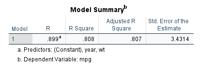
Note- the new R squared has improved, and the Standard Error has reduced! This indicates that our multiple regression model is more precise than the previous linear regression model.
2) Do all our variables hold statistical significance?
You can verify this by checking the ANOVA table. The F statistic obtained and its significance indicate whether our independent variables have a statistically significant association with our dependent variable. It also helps us determine whether our model is a good fit for explaining the variation in the mpg.
In our case, we have evidence to believe it is, given that the significance (sig) is way below 0.05 (<0.001).
Lastly, check the “Coefficients” table. Here we find the value of a (or the slope) for each of our independent variables (wt and year) and we also find our intercept.
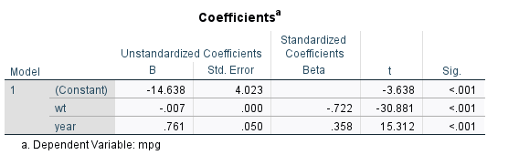
So, how can we write our multiple regression equation? mpg (Y) = -14.638 – 0.07(weight) + 0.761(year). Thus, if we added a new car and had some basic data like the year and weight, we would be able to estimate, with a relatively high degree of confidence, how many mpg would be used given the predictors.
Interpretation
Here, the constant = -14.638 represents our estimate for the intercept, i.e.- the mean miles per gallon for a car that has a weight of 0 pounds and was manufactured in 1900 (the start year of our dataset). As we can see here that the estimate is negative, which, in the real world, is physically impossible. However, this is not surprising because we cannot realistically expect our model to accurately predict the fuel efficiency of cars from 1900 that weigh 0 pounds because such vehicles never existed anyways! So, like simple linear regression, this value (intercept) represent the mean of Y when all predictors are set to 0.
However, the interpretation of the coefficients of our predictors is slightly different from previous SLR. For instance, the estimate of -0.007 for “wt” = the expected average change in miles per gallon for a one-unit increase in weight for cars of a specific model year, with the year being held constant. Note that this estimate is negative, which aligns with our expectations, as, in general, fuel efficiency tends to decrease for larger vehicles. However, in the context of multiple linear regression, this interpretation is contingent upon a fixed value for another predictor, such as “year” in our case. This means that the relationship between fuel efficiency and weight might not hold true when additional factors, like the model year, are taken into account, potentially causing a reversal in the sign of our coefficient.
Lastly, the estimate of 0.761 for “year” = the expected average change in miles per gallon for a one-year increase in the model year for cars with a specific weight, where weight is held constant now. It is not far from expectation that this estimate is positive since one would anticipate that, over time, as technology advances, cars with the specific weight would achieve better fuel efficiency compared to their earlier counterparts.
Note- Sometimes, you may discover that the model is not statistically significant, or that one independent variable does not hold statistical significance. In such instances, you may want to rerun the model, eliminating insignificant or redundant variables. Ideally, it is good to do some variable importance selection on your predictors before including them in the model (or use some prior knowledge of the system). It may take several attempts to run multiple regression models to find the best-fitting model for the data. Generally, it is good to have model with a low standard error of the estimate, high R squared and relatively simple. A model with three independent variables, a relatively high R squared and low standard error may be preferable to a model with 19 independent variables and a high R squared and low standard error (this is why variable importance is crucial)!
To do variable importance selection, you can calculate the multicollinearity. In SPSS, you can compute the Variance Inflation Factor (VIF). This can be done under regression> statistics> collinearity. The output should be like below.
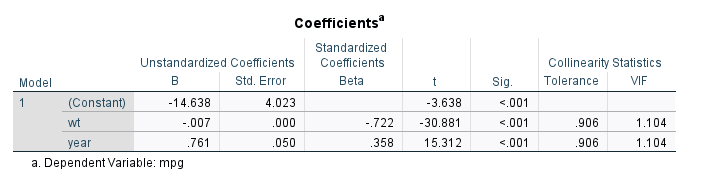
The VIF values indicate the degree of multicollinearity for each variable in the model. In our case, the VIF (for both wt and year) is around 1.104. Ideally, a VIF of 1 means that variables are not correlated and no multicollinearity in the regression model. Generally, a VIF >6 is considered a sign of high multicollinearity between the predictor variables and can affect the stability and interpretability of your regression model. You may need to address multicollinearity by either removing one of the correlated variables (redundant) or you can use dimensionality reduction techniques like Principal Component Analysis (PCA) to reduce dimensions (we shall come back to PCA soon).
#End
Chapter 5- Regression Contd.
Least Square Approach
last week, we talked about simple linear regression and its assumption- linearity, independent, normally distributed and homogeneity of variance. We also mentioned that simple linear regression models the dependent variable Y as a a linear function of independent variable (or variables in the case of multiple predictors) X. This means we would expect a plot similar to the one below (you can use this dataset to reproduce the plot (make a scatter plot of weight vs height).
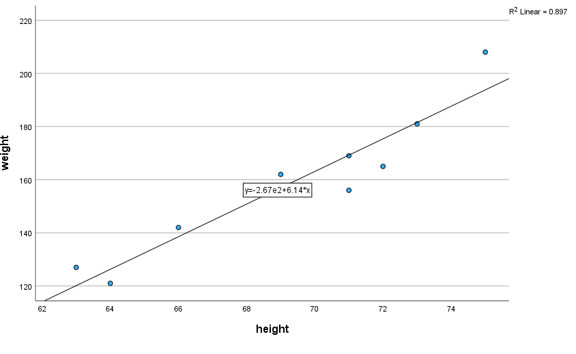
Looking at the plot, do you think this line best summarizes the trend between the students height and weight?
Before we proceed, let’s introduce equation of the best fitting line.
\(\hat{y} = \beta_0 + \beta_1 x_1\)
where
\(\hat{y}_i\) is the predicted response (or fitted value) for experimental unit i
\(y_i\) denotes the observed response for experimental unit i
\(x_i\) denotes the predictor value for experimental unit i
Now, let’s apply this formula on the plot above. Remember from the plot above, our regression equation is \(\hat{y}\) = -267 + 6.14x or \(\hat{weight}\) = -267 + 6.14 height
The first data on the plot shows that student 1 has a height of 63 inches and a weight of around 127 pounds (i.e. \(x_1\) = 63 and \(y_1\) = 127). Assuming we know this student’s height but not weight, we could use the equation of the line to predict the student’s weight. Thus, we’d predict the student’s weight to be -267 + 6.14(63) or 119.82 pounds. Which means our predicted y (\(\hat{y}\)) = 119.82 pounds. Apparently, this is not the same as can be seen on the plot (\(y_1\) = 127) and this means we have prediction or residual error. As a matter of fact, the residual error can be calculated as 127-119.82= 7.18 pounds. You can do the same for all values of x (heights) and get your observed (y) responses, your predicted responses and residual errors. In summary, when we use the equation \(\hat{y} = \beta_0 + \beta_1 x_1\) to make prediction of the actual response of \(y_i\), we make prediction or residual error \(e_i = y_i - \hat{y}\) (which means that the size of the residual error depends on the data point).
An important question, however, is “What is the best fitting line or how do we define a good line”? There are several lines we could use, and our aim is to identify one that is characterized by “minimal errors.” In other words, a line that fits the data “best” will be one where the n prediction errors, — each corresponding to an observed data point — are minimized overall. The next question is then, how do we identify such a line? There are numerous methods we could employ for this purpose. One way to achieve this is by applying the “least squares approach” which means we need to find the line that “minimizes the sum of squared prediction errors. In other words, we need to find the values of \(b_0\) and \(b_1\) that can make the sum of the squared residual errors as minimal as possible.
Mathematically, we need to find the values of \(b_0\) and \(b_1\) that minimizes
\[\text Q = \sum^{n}_{i==1} (y_i - \hat{y})^2\]
Where our
prediction (residual) error for data point i = \(y_i - \hat{y}_i\)
the squared prediction (residual) error for data point i = \((y_i - \hat{y}_i)^2\)
Lastly, the summation symbol indicate that we should add up the squared prediction (residual) errors for all n data points.
So, to summarize, imagine you fit two lines to the data and you want to know which one best describe the trend, you’d pick the line with the lowest sum of squared residual (prediction) error as the best line.
From the plot above, note that that if we (manually) adopt the least square method described above to find the equation of the line that minimizes the sum of squared residual error, we may encounter big issues. Specifically, we would need to execute this procedure for an infinite variety of potential lines (not convenient!). Luckily, someone has already done the laborious work of deducing formulas for both the intercept and slope in the equation of the line that minimizes the sum of squared residual error (derived using Calculus).
Here, we minimize the equation for the sum of the squared residual errors:
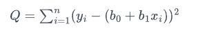
thus, we can get our least squares estiates for \(b_0\) and \(b_1\) by taking the derivative with respect to \(b_0\) and \(b_1\), set to 0, and solve for \(b_0\) and \(b_1\):
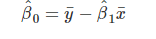
and:
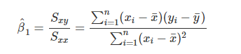
Given that the formulas for \(b_0\) and \(b_1\) are derived using the least square approach, you may see the regression equation being referred to as the least squares line, least squares regression line or the estimated regression equation. However, it is important to note that in this approach, we’ve made no distributional assumption about the data. We assumed they’re fixed and not random and follow a linear trend.
Ideally, you won’t have to worry about the formulas for \(b_0\) and \(b_1\) and this is because, there are so many statistical software that can find the least squares for you. However, a question that often pop-up is that- why do we try to minimize the sum of squared errors rather than just the errors themselves? The reason is that if we didn’t square the residual error above, the positive and negative residual errors would cancel each other out when we sum them, consequently yielding 0. This approach is referred to as least squares because it aims to minimize the sum of squared errors, thereby seeking to determine the least squares.
Example of Least Square Approach using data
For this, we would use the “car” dataset. This is an open dataset available in R software (and online). Very briefly, it shows the relationship between the speed and stopping distance of cars. You can downoad it from our google folder here. load this dataset to your SPSS.
Traditionally, we would now compute \(\hat{b_1}\) and \(\hat{b_0}\) for the cars dataset. However, like I explained above, we can easily allow SPSS or other software to do this for us.
From the data, note that our x = speed and y = dist. From your data, we need to calculate the three sums of squares defined above. For simplicity, we will regard to the summation sign above as “S”.
So, compute Sxy, Sxx, Syy
Sxy = sum((x - mean(x)) * (y - mean(y)))
Sxx = sum((x - mean(x)) ^ 2)
Syy = sum((y - mean(y)) ^ 2)
c(Sxy, Sxx, Syy)To do this in SPSS, follow this below procedure-
recall speed = x, dist = y.
1. Compute the means of speed and dist:
Go to “Data>Aggregate” in the top menu.
Drag the “speed” and “dist” to the “Aggregated variables.
In the “Function” box, select “mean” (if not already selected).
Click “OK” .
2. Compute sum of speed and dist- i.e., Sxy
Go to “Transform”.
Choose “Compute Variable.”
In the “Compute Variable” dialog, give the new variable a name (Sxy).
In the numeric expression box, type SUM(speed - speed_mean) * (dist - dist_mean).
Click “OK” to create the new variable.
Finally to create count the SUM of XY (because SPSS did not compute that automatically), click on “Data>Aggregate”. Then, drag Sxy to the “summaries of variable”. Click on Function and select “Sum” (instead of Mean).
Click “OK” to see the sum of XY
Follow the above procedure to do the same thing for Sxx and Syy. Note that you don’t have to calculate the speed_mean or dist_mean again. So technically, you’re repeating step 4 & 5 above.
Ideally, your answer should be-
Sxy Sxx, Syy
5387.40 1370.00 32538.98 Finally, we need to calculate the \(\hat{b_0}\) and \(\hat{b_1}\)
\(\hat{\beta_1}\) = Sxy / Sxx
\(\hat{\beta_0}\) = mean(y) - \(\hat{\beta_1}\) * mean(x)
to calculate the \(\hat{\beta_1}\) in SPSS, go to transform, give it a name (under the Target variable). Under the numeric expression, select the Sxy created above and divide it by Sxx. You should get 3.93.
Do the same thing for \(\hat{\beta_0}\). This time, specify the dist_mean - \(\hat{\beta_1}\) we just created * speed_mean and you should get -17.58 in your data view.
\(\hat{\beta_1}\) = 3.93
\(\hat{\beta_0}\) = -17.98
Interpretation
What do these values tell us about our dataset?
Let’s use the regression line formula again, \(\hat{y} = \beta_0 + \beta_1 x_1\)
or more formal way,
\(\hat{y}_{i, dist} = \beta_0 + \beta_1 {x_1, speed}\)
Remember \(\hat{\beta_0}\) is the constant (intercept) and \(\hat{\beta_1}\) is the slope.
From the result, the slope parameter \(\hat{\beta_1}\) tells us that for every unit increase in speed of one mile per hour, the mean stopping distance increases by \(\hat{\beta_1}\). It is important to note that we’re talking about the mean estimate- If you remember, from the formula of equation of best fit line \(\beta_0 + \beta_1 x_1\) represent the mean of y (here, distance) for a particular value of \(x\) (speed). So, the slope (\(\hat{\beta_1}\)) tells us how the mean of distance is affected by speed.
Specifically, the \(\hat{\beta_1}\) = 3.93 implies that for every unit increase in speed (of one mile per hour), the estimated mean stopping distance increases by 3.93ft. Also note the word “estimated” since \(\hat{y}\) is the estimated mean of the observed response Y, so \(\hat{\beta_1}\) tells us how the estimated mean of Y is affected by changing \(x\).
What does \(b_0\) tell us?
In a very brief term, the intercept (or \(\hat{\beta_0}\)) represent the value of Y when all the predictors = 0 (i.e.- mean stopping distance for a car traveling zero miles per hour or not moving at all).
Here, the \(\hat{\beta_0}\) tells us that a vechicle travelling at zero mile per hour is predicted to have -17.58 stopping distance. In other words, the estimated mean stopping distance for a car not moving is−17.58 ft. Obviously this doesn’t make sense, because does that mean when you apply the brakes to a car that is not moving, it moves backwards? Anyways this is not surprising becuase we “extrapolated” beyond the range of the x values (model scope). It doesn’t make sense to say you’re travelling at speed of zero miles per hour (so intercept here doesn’t make much sense)! More information on extrapolation can be found in this blog and we will see more of it shortly below in the tutorial.
Predictions
Let’s rewrite the estimated regression line
\(\hat{y}_{i, dist} = \beta_0 + \beta_1 {x_1, speed}\)
\(\hat{y}_i = -17.58 + 3.93x\)
or
\(\hat{dist}_i = -17.58 + 3.93speed\) (n.b- recall the hat there means “predicted”)
We can now use this equation to make predictions. If you check the data, the speed ranges from 4 to 25.
Question 1- Can we make a prediction for the stopping distance of a car traveling at 9 miles per hour?.
Hint- It’s easy, slot in 9 in the equation above (\(-17.58 + 3.93speed\)). Go to transform, compute variable and do the samething we’ve been doing. Note, that the speed = 9. Your answer should be 17.81 (This tells us that the estimated mean stopping distance of a car traveling at 9 miles per hour is 17.81).
In the same way, we can make predictions for unknown data or unseen time point. For example,
Question 2- make a prediction for the stopping distance of a car traveling at 6 miles per hour. This is referred to as interpolation as 6 is not an observed value of speed (But is in the data range.)- you can check the speed and you’d agree that 6 is not there. Your answer should be 6.02.
Finally, we can make a prediction for the stopping distance of a car that is outside of the data range (extrapolation!)
Question 3- make a prediction for the stopping distance of a car traveling at 100 miles per hour. This is extrapolation as 100 is not within the range of speed and not an observed value. So, we are only transferring our model to that time point (learning from the model- Machine Learning)! Your answer should be = 375.66ft
Although cars can travel 100 miles per hour today (although with fines from police), but maybe not some years ago! This is quite similar to the similar issue when interpreting \(\hat{b_0} = -17.58\) (that is estimated mean stopping distance when speed = 0). This implies that we should be less confident in the estimated linear relationship outside our data range.
Residuals
Recall our residual formula, \(e_i = y_i - \hat{y_i}\)
We can calculate the residual for the prediction we made for a car traveling 9 miles per hour. First, we need to obtain the observed value of distance for this speed value (10). You can look at the data table, what’s the value of distance when speed = 9?
Answer, dist == 10.
Then, we calculate our \(e = 10 - 17.81\) = -7.81.
The negative residual value indicates that the observed stopping distance is actually 7.81 feet less than what was predicted.
Estimating the Variance
We can now use the residuals for each data point to compute the variance
In regression case, for each \(y_i\), we can use a different estimate of the mean, that is \(\hat{y_i}\) to calculate the variancee.
To compute the variance in SPSS, you can follow these steps.
- compute the predicted \(\hat{y} = \hat{\beta_0} + \hat{\beta_1}\)
- Compute the residuals \(e_i = y_i - \hat{y_i}\)
- Compute the n = \(length(e)\)
- Compute the variance, \(s2_e = \frac {sum(e^2)} {(n-2)}\)
To do this in SPSS, go to Transform and create a variable call y_pred using the \(\hat{\beta_0}\) and \(\hat{\beta_1}\) already defined above. Also, do the same thing to compute residual (e). Note that your \(y_i\) = dist and we’ve already calculated \(\hat{y_i}\) up there. Lastly, n = 50 (the length of the data).
Now, compute the variance by going back to “transform” and under the numeric expression, use the SUM (e **2) . Note- the e is your residual we just created and n = 50.
Finally, click on the “Data>aggregate” and drag in the ss2_e we just calculated to the “Summaries of variables”. Then, click on FUNCTION and change it to SUM. Click on OK and you should get your variance (236.53).
Similar to the univariate measure of variance, variance = 236.53 lacks a meaningful practical interpretation in this context of stopping distance. However, by taking the square root, we can obtain the standard deviation of the residuals, often referred to as the residual standard error.
Question- take the square root to compute the residual standard error
(Hint- you can do that under transform> compute variable). Your residual standard error should be = 15.38.
Interpretation- This indicates that our average estimates of stopping distance are generally inaccurate by approximately 15.38 feet.
Variation Decomposition
Here, we will briefly define 3 of the metrics used to decomposition of variation.
1. Sum of Squares Total
The term “Sum of Squares Total,” denoted as SST, represent the total variation present in the observed y values.
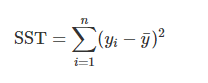
2. Sum of Squares Regression
The term “Sum of Squares Regression,” often abbreviated as SSReg, denotes the portion of variation in the observed y values that can be accounted for or explained by the regression.
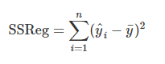
3. Sum of Squares Error
The term “Sum of Squares Error,” (SSE), denotes the portion of variation in the observed y values that remains unexplained or unaccounted for. You may frequently see SSE written as RSS, which stands for “Residual Sum of Squares.”
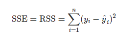
Now, you can use the formula of each of them to calculate their values in SPSS, Go to “transform> compute variable.”
SST = sum((dist - mean(dist)) ^ 2)
SSReg = sum((y_hat - mean(dist)) ^ 2)
SSE = sum((y - y_hat) ^ 2)
Also, calculate the aggregate (under “Data>aggregate”) to see the sum of them-
SST should be == 32538.98
SSReg = 21185.46
SSE = 11353.52
When looking at these 3 metrics individually, they kind of lack a significant practical interpretation. However, we will see now and we can use them collectively to show a new statistic that can measure the strength of regression model.
Coefficient of Determination
The coefficient of determination is the fraction of the observed variation in y that can be accounted for or explained by the regression model.
\[R^2 = \frac {SSReg} {SST}\]
or
\[R^2 = 1- \frac {SSE} {SST}\]
Question- compute the \(R^2\) for our example data in SPSS
Hint- Go to transform>compute variable. Then Select the SSReg_sum/SST_sum. Your answer should be 0.65%
Interpretation- From our example dataset, our calculated \(R^2\) = 0.65. Thus, we can conclude that 65% of the observed variation in stopping distance can be explained by the linear relationship with speed.
#End.